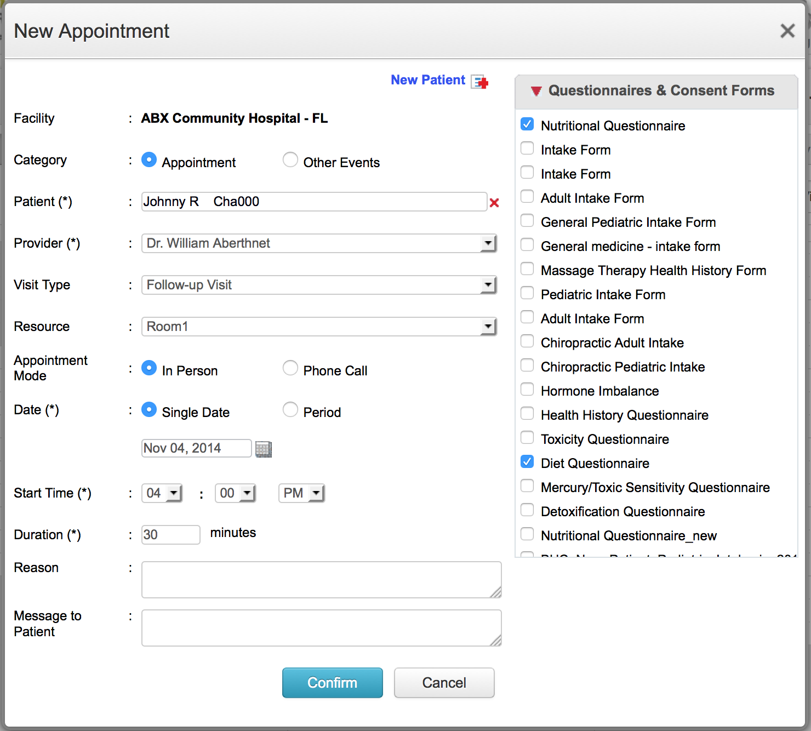

Schedule Appointment
Patients appointments can be scheduled in ChARM EHR by following the steps given below:
- Go to the Calendar tab, and select "Day" view. Select the date for which appointment has to be booked from the calendar.
- The calendar will show the list of providers column-wise.
- Click on the empty "Time Slot" against the provider with whom appointment is needed.

- Select the patient by searching the Name (or) Record Id. If the patient is new to the practice, use the "New Patient" link to add them to your practice.
- Choose the "Visit Type". Choosing the "Visit Type" automatically sets the duration for the appointment as per the pre-configured settings.
- Choose the "Appointment Mode"
- If the appointment is needed over a time period, then set the "Date" option to "Period" and choose the dates.
- Enter the "Reason" for the appointment.
- Enter the "Message to Patient", if you wish to give any instructions to the patient.
- You can optionally choose the consent forms and pre-appointment questionnaires that needs to be filled by the patient from his Patient Portal login (or) Kiosk.
- Click on "Confirm" to book the appointment.